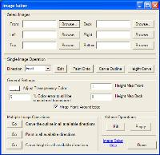
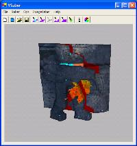
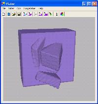
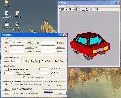
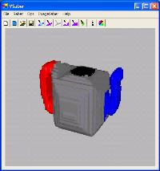

| | Image SaberThe Image Manipulation Component of VSaberImageSaber lets you do all sorts of really cool operations on your model in VSaber, all using different kinds of reference images. Below you will learn about how to use Image Saber and see the different operations it can perform. I assure you this is quite interesting (at least to me). 
The interface
| 
Pasting images onto models
| 
Carving using depth-maps
| 
Carving using reference image outlines
|
How To Get ItImageSaber is a VSaber component, so just get VSaber and you'll find ImageSaber in the (oh this is a tough one) 'ImageSaber' menu. Don't worry, VSaber is freeware. |
The Interface
Select Images This is where you say which images are to be associated with which directions. So when ever you perform and action involving the 'Front' direction, it will look in the 'Front' box to see which file you have selected. Note: ImageSaber can load any image that the .Net Framework can load, which means all the main image formats except the really strange ones. Single Image Operation select the direction and then hit one of the buttons to the left to select which action to perform. For information on each, go to Paint Onto, Carve Outline and Height Carve. When you click 'Edit' MS Paint is activated and automatically opens the specified image. General Settings these settings decide how each of the operations work. The transparent color is used by the outline carving program to deside which color should be taken out. Any pixels with this color will be carved into. The % error for transparency is used so that you can be a little bit off when selecting exactly which colour is transparent.
When paint lands on an object, it will colour the first voxel it reaches in that direction. If 'Wrap Paint Around Edge' is active then the paint will continue to colour voxels until it either runs into empty space or is surrounded by filled voxels, this gives the visual effect of paint that wraps around object instead of just sitting on them.
Height Map Front and Back are used to scale grey-scale height maps so that they don't look to stretched out. See the Height Carving section for more. Multiple Image Operations these perform a series of operations on all gives images. So for instance if you gave images for the front, left and top directions, they will perform the specified operations on all of those directions. |
Painting with images
This cool feature lets you paste an image onto an object. It is as though the image where a wet poster that you threw really hard against the model, it wraps around the first thing it comes in contact with. As you see in the picture above, it looks like the marine has a 'shadow' behind him, this is because the image hit his body first, and thus never hit the wall. Paint with images is also available from the ImageSaber menu of VSaber, and can help to quickly add a lot of texture and detail to a model. |
Carving with Height MapsOften times you may have a grey-scale height map of a 3D object and you wish to reconstruct the model from the height map. Well this little feature lets you do just that. Whiter points on the image are made closer and darker points further. Note that this carving operations actually only removes voxels in the shape of the image, it does not add any. Because of this, you can do depth-carving from multiple different angles and construct a 3D model from these multiple depth maps. Above you see I've painted an the height map onto an already carved object, as well as shown the original height map. Thus showing you which parts of the image where lighter and darker (I also marked the outline of the filled section in yellow for some reason I can't remember). |
Carving Image Outlines

Carving using image outlines is a very cool feature that most people havn't had the joy of messing around with. As you see in the pictures above, I created a few VERY ROUGH images of the object from different angles, then only using ImageSaber, and not manually 'touching up' in VSaber (which is what one should really do) I created the models above. This was a simple matter of pressing about 4 buttons. In the General Settings section of ImageSaber you defined which colour is transparent, then the system simply looks at your reference images from all the given angles and cuts out whatever pixels match your transparent colour (in these cases white). Thus all you are left with is what wasn't white. I then simply pasted these images (using Paint with Image) onto the resulting modeling to create the textured models you see above. This feature is best to try out for yourself, and can be alot of fun. Enjoy. |
|

{kind=link}
{kind=link}
{kind=link}
{kind=link}
{kind=link}
{kind=link}
{kind=link}